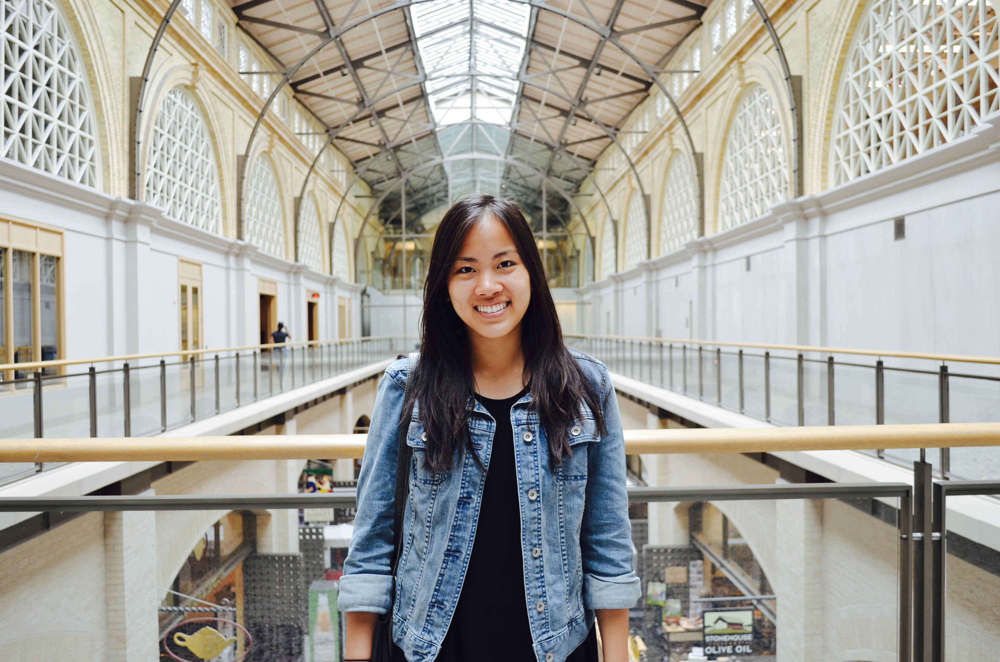

Hi! My name is Emily Tsai. I am currently an undergraduate student at UC Berkeley studying Computer Science.
With my degree in computer science, I hope to bridge technology with community work in underserved/under-resourced communities. I have a particularly strong interest in doing collaborative work in the health and education fields.
Outside of my interests in the bits and algorithms world, I also enjoy leading multiple lives (reading), training my mind and body to endure hours of pain (running half-marathons), and learning/sharing highly interesting--but often irrelvant--coffee table facts. (For example, did you know that humans have more bacterial cells in our bodies than we have of our own human cells? Thus, you are more not-you, than you are you!)
Thanks for visiting my page!
